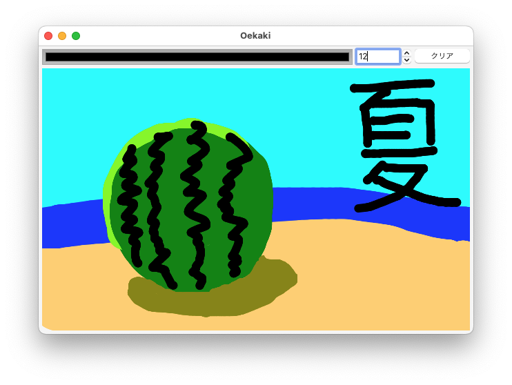

課題の進め方
Caution
下記の「課題の進め方」は2022年度版．2023年度は準備中だがMainForm.cs（および関連リソース）をGoogle Classroomから提出してもらう予定．
大雑把には，以下の名前のプロジェクト/ソリューションを作って，zipにまとめて提出する．
_Q
上記の「_Q」を以下では，提出物ベース名と呼ぶことにする．たとえば，Z0TB9999さんの第5回課題の提出であれば，提出物ベース名はZ0TB9999_Q5である．
公開の場所に解答を置かないようお願いします． githubやbitbucket等は使える人は使えばよいと思いますが，private レポジトリにするようにお願いします．
プロジェクト/ソリューションの作成
Visual Studioの場合
「新しいプロジェクトの作成」（Windows）や「新規」/「New」（Mac）から，C#の「Eto.Forms Application」あるいは「Eto Application」テンプレートを選び，プロジェクト名とソリューション名を とする．たとえば，Z0TB9999さんの第5回課題の提出であれば，プロジェクト名とソリューション名はともにZ0TB9999_Q5とする．プロジェクト名とソリューション名以外の選択項目は（あれば）デフォルトのままとする．
コマンドラインの場合
適当な場所に「」という名のディレクトリを作成した後に，そこに移動し
dotnet new etoappでプロジェクト（共通のもの，GTK用，Mac用，Wpf用）を作成する．自分の環境に不要なものも消さない（採点の際に困るので）．
課題の実施
.cs ファイルを問題文の指示の通りに作成する（MainForm.csを変更すればよい）．….Gtk，….Mac，….Wpfの中に含まれているファイルは変更しない．
作成した .csファイルには先頭部分に学籍番号と名前をコメントとして含めること．なので，たとえば学籍番号Z0TB9999の東北 大学さんの提出ファイルは
// Z0TB9999
// 東北 大学という行から始まる．
提出するzipの準備
Visual Studioでプロジェクト/ソリューションを作成した場合
まず，Visual Studio でソリューション「.sln 」を開いた後，ソリューション エクスプローラーから，4つのプロジェクト名（「」，「.Gtk」 ，「.Mac」 ，「.Wpf」 ）について，それぞれプロジェクト名を右クリックして出てくるコンテキストメニューから「〜をクリーン」を（選択できれば）選択する．あるいは，以下の手順を実行する前に
objフォルダとbinフォルダを消したのでもよい．- Macだと「.Wpf」については「〜をクリーン」が選択できないが，それでよい．
当該ソリューションが含まれているフォルダは以下の構造をしている．
- /
- .sln
- /
- /
- .csproj
- MainForm.cs
- obj/
- …
- .Gtk
- …
- .Mac
- …
- .Wpf
- …
- /
そこで，たとえば下記のようにして，一番外側のフォルダをzip形式で圧縮し，「.zip」というzipファイルを作成する．
- Windowsの場合．まず，当該フォルダはデフォルトだと，ユーザフォルダの
source\repos以下にある．なお，ユーザフォルダはデフォルトだとC:\Users\であり，エクスプローラーのアドレスバーに%HOMEPATHを入力すれば移動できる．また，Visual Studioの起動後の画面で「ローカルフォルダを開く」を選んだのでも場所がわかる．エクスプローラーにて当該フォルダを右クリックして「送る」から「圧縮（zip形式）フォルダー」を選択する．すると，「.zip」というzipファイルが作成される． - Macの場合．当該フォルダの場所はデフォルトだと，
~/Projects/以下にある． Finder.appで当該フォルダをCtrl + クリック（あるいは右クリック）し，「"〜"を圧縮」を選ぶ．すると，「.zip」というzipファイルが作成される．
- /
コマンドラインでプロジェクトを作成した場合
プロジェクト/ソリューションの作成で作成したディレクトリの親ディレクトリに移動する．
作成したディレクトリは以下のような構造になっている．
- /
- /
- .csproj
- MainForm.cs
- obj/
- …
- .Gtk
- …
- .Mac
- …
- .Wpf
- …
- /
- /
以下のそれぞれの行を順に実行する（
$はプロンプトを表す）．cd dotnet clean dotnet clean dotnet clean dotnet clean cd ..
「.zip」 を作成する．エクスプローラーやFinder.app経由で作成してもよいし，コマンドラインから以下を実行してもよい．
zip -r .zip /
提出
できあがった「.zip」をClassroom内の当該回の「課題」より提出する．たとえば，Z0TB9999さんの第5回課題の提出であれば，提出するファイルの名前はZ0TB9999_Q5.zipになる．
基本課題
以下の要件を見たすお絵描きプログラムを作成せよ．
- 少なくとも以下のコントロールが配置されている
ColorPickerNumericStepper- 「クリア」と書かれたボタン
- お絵描き用のコントロール（ウィンドウの主要な面積を占める）
- マウスの主ボタン（右利き用マウスだと通常は左ボタン）を押してマウスを動かすと，線が動きに沿って描かれる．このとき，線の色は
ColorPickerで選択した色で太さがNumericStepperで選択した数であるとする．- 要はよくあるお絵描きツールの「鉛筆」ツールのような挙動をする．
- 「クリア」と書かれたボタンが押されたら，書かれた絵がクリアされる．
たとえば，以下のスクリーンショットは実装するプログラムの一例を表している．

Hint
お絵描き用のコントロールのMouseMoveイベントを購読（イベントハンドラを登録）する．主ボタンが押されたまま移動されたかどうかは，以下のようにハンドラの第2引数のButtonsプロパティを用いて判定できる．
// oekakiControl の MouseMove イベントを購読
oekakiControl.MouseMove += (s, me) => {
if ( me.Buttons.HasFlag( MouseButtons.Primary ) ) {
// 主ボタンが押されたままマウスが移動したときの処理
}
};Hint
素朴なアイデアはMouseMoveイベントの度に現在のマウスの位置に円を描くというものだが，それだとマウスが一度に沢山に動いたときにとぎれとぎれの「線」が描かれてしまう．それを避けるためには，以下のようにするとよいだろう．
- マウスの以前の位置を覚えておく．
- マウスの主ボタンが押されたら，その位置に円を描き，「マウスの以前の位置」を更新する．
- マウスの主ボタンが押されたままマウスが移動されたら，「マウスの以前の位置」と「マウスの現在の位置」の間に線分を引く．そして，「マウスの以前の位置」を更新する．
線分の描画にはGraphics.DrawLine(Pen, PointF, PointF)メソッドが使用できるだろう．PenのLineCapプロパティをPenLineCap.Roundに設定するときれいに線が引けるかもしれない（参考）．
発展課題
Caution
本課題を完了できたのならば本課題の解答のみを提出すればよく，基本課題の解答は提出する必要はない．
基本課題の条件を満している限りにおいて，お絵描きプログラムにさまざまな機能を追加せよ．追加する機能は自由に決めたのでよいが，どのような機能を追加したかの説明およびプログラム上の工夫点はコメントとして提出プログラムに含めること．
どういう機能を追加したらよいかまよっている人の参考までに，いくつかの機能追加の方向性を以下に示しておく．もちろん，追加する機能はこれらに限定されない．
- お絵描きした画像を保存する機能
- 「消しゴム」機能
- アンドゥ，リドゥ機能
- Shiftを押しながらクリックすると，以前に最後にマウスを離した場所との間に直線を引く
- 適当なコントロールやダイアログ等を追加し，文字列を入力できるようにする
- 「ぼかし」などのフィルタ処理
- 拡大・縮小・回転，あるいは一般の線形変換
- レイヤ機能